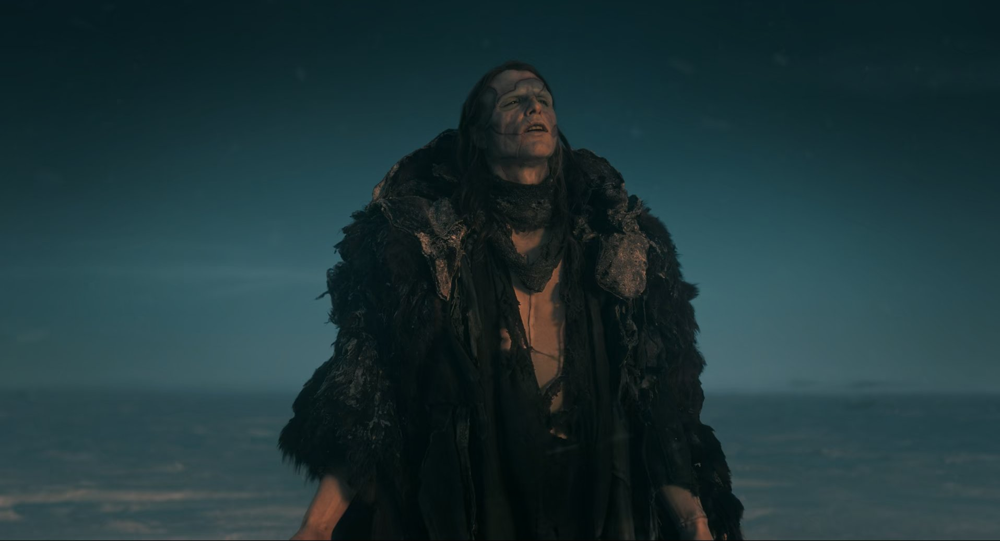

Del Toro’nun merakla beklenen, bu hırslı, epik, romantik Frankenstein’ı, yönetmenin fantazileri arasında sıkışmış, ‘kalbi’ olmayan bir uyarlama. Romanın farklı film uyarlamalarından izler taşıyan filmde Del Toro, ölmesi mümkün olmayan bir Yaratık’la çıkıyor seyirci karşısına.
Guillermo Del Toro’nun Frankenstein’ı (2025), parçalarına bakılınca son derece etkileyici hattâ büyüleyici. Prodüksiyon kalitesinden, oyunculuklara, dünya kurulumuna, Del Toro’nun imzası olan detaycı sanat yönetimi, renk retoriği ve kompozisyonu üzerine titizlikle düşünülmüş imajlar, pratik efektleri tercih etmesi, “canavar” sevgisi, her şey tastamam. Parçalarının toplamından daha büyük bir yaratık olan Frankenstein canavarının aksine, Del Toro’nun filmi parçalarının toplamından ibaret. Bu da az şey değil elbette ama eksik (ya da fazla) olan bir şeyler var. Guillermo Del Toro’nun Frankenstein’ını izlerken, çocukluğundan beri hayalini kurduğu bir şeyi başarmış büyük bir yönetmenin en “büyük” filmini izlediğimiz duygusundan kopamıyoruz. Öte yandan son derece epik olan bu anlatıda, her şeyi bir arada tutması gereken o şey, bir kalp, bir merkez, duygusal ve görsel bir kreşendo, her şeyin ona doğru aktığı ve ona varınca rahatladığı bir yükseklikten bahsedemiyoruz. Marry Shelley’nin Frankenstein’ı yazdığı 19. yüzyıl başında, edebiyatçıların kuşkunun askıya alınmasını kolaylaştırmak için sıkça kullandıkları yöntem, birbirini çerçeveye alan farklı perspektiflerden birinci tekil şahıs anlatılar kurmak ve yazarın orada olduğunu, okurun kitap okumakta olduğunu unutmasını sağlamaktı. Del Toro, Shelley’nin romanda kullandığı birinci tekil şahıs perspektiflerini bir ölçüde muhafaza etmiş ise de onunki, ister istemez kendisini her zaman hatırlatan bir vizyon. Filmde, sürekli hareket eden kameranın en çok görmek istediği şey sanki yüzeyler; kendi kendine, hayranlıkla ve gözden kaçmak istemeyen detayların anksiyetesiyle bakan bir film Frankenstein. Düğün gecesinde olup bitenleri izlerken karakterler arasındaki gerilimler son raddede yoğunken ve oyunculuklar bu kadar iyiyken nasıl olup da izleyici nereye bakacağını şaşırıyor? Özellikle canavarın öyküsünün anlatıldığı bölümde, çok dokunaklı (göz yaşartıcı!) sahneler olmasına rağmen James Whales’in 1931 yapımı Frankenstein’ındaki o “It’s alive!” çığlıklarının etkisini yaratmıyor film. Seyircinin izlediklerine inanmasını sağlamanın, daha “gerçekçi” bir fantastik dünya yaratmanın yolu Del Toro’nun söylediğine göre (yine) mümkün mertebe CGI’dan kaçınmak, tercihini pratik efektlerden yana kullanmak olmuş. Nitekim bu filme dair konuşulanların büyük bölümü Viktor’un laboratuvarının, filmdeki geminin, Jacob Elordi’nin 11 saat süren protez makyajının elle yapılmış olması üzerine. Halbuki gemi sahiciydi ama arkasındaki gökyüzü bariz bir yerleştirmeydi, keza Viktor’un laboratuvarının bulunduğu kule. Kurtlar, inekler ve koyunlar, kar yağışı, kuledeki patlama ve yangın… filmdeki spektaküler şeylerin çoğu izleyeni yadırgatacak, izleme işinden koparıp duraklatacak şekilde ben CGI’ım diye bağırıyor. Viktor, Del Toro’nun filminde canavarının dikişlerini görünmez yapmış ama filmin pratik ve CGI efektleri arasındaki dikişler bariz, muhtemelen CGI’ları filmin dokusuna yedirebilmek için yapılan ışık tercihleri nedeniyle…
Versiyonlar Arasında
Marry Shelley’nin Frankenstein’ı 1818 yılında isimsiz olarak ve 500 adet tirajla yayımlandıktan kısa süre sonra yapılan tiyatro uyarlamalarından başlayarak çok sayıda versiyonu olan bir roman. Yazarın kendisi de çeşitli versiyonlarını yazmış. Bugün dolaşımda olan, resmî kabul edilen ve bu kez Shelley’nin imzasıyla çıkan baskı 1831’de yani ilk romandan 13 yıl sonra yayımlanmış. Marry Shelley 1831 baskısı için ilk öyküden pek fazla uzaklaşmadığını, önemli bir şeyi değiştirmediğini söylediği bir önsöz yazmıştı. Önde gelen Mary Shelley uzmanlarından Prof. Anne K. Mellor’a göre ise durum bundan biraz farklı. Mellor, Shelley’nin, Viktor’u 1831 versiyonunda kibirine yenilen fakat ahlaki açmazların karşısında tercihler yapmaya muktedir bir trajedi kahramanından ziyade bir kader kurbanı olarak çizdiğini, 1818 versiyonuyla kıyaslandığında Viktor’a karşı daha anlayışlı, daha az yargılayıcı bir tavır takındığını söylüyor. Romanın 1818 versiyonunda Viktor’un “günahı” yarattığı varlığı terk etmiş olmak, ondan sevgisini, şefkatini ve anlayışını esirgemiş olmak; 1831 versiyonunda ise Viktor’un suçu bir takım tesadüflerin ve kendi kontrolünde olmayan gelişmelerin neticesinde aklına gelen fikirlerle yaratığı dünyaya getirmiş olmak. Mellor, bu durumu Marry Shelley’nin iki kitap arasındaki 13 yıl içinde özellikle özgür irade ve kader konularındaki görüşlerini değiştirecek olaylar yaşamış olmasına bağlıyor. Dört çocuğundan üçünü aralıklarla kaybetmiş, eşi Percy Byshe Shelley’yi bir deniz kazasına kurban vermiş, hayatta kalan oğlunu da kaybetme kaygısı ve tek geçim kaynağı olan yazma işine devam edebilmek için 1818 versiyonundan örneğin Elisabeth karakterinin Viktoryen okura epeyce radikal gelebilecek patriyarka karşıtı fikirlerini büyük ölçüde romandan kırpmış olduğunu söylüyor. Del Toro’nun filmi, Viktor ve Elisabeth karakterlerinin bazı yönleri 1818 tarihli Frankenstein’ı andırıyor. Elisabeth, entellektüel merakı, sivri dili ve erkeklik hallerini tiye alışıyla hem 1818 Elisabeth’ini hem de belki Marry Shelley’nin kendisini aynalıyor gibi. Aynı şekilde, Viktor, “işi başardıktan sonra ne yapacağımı hesaplamamıştım,” minvalinde bir itirafta bulunuyor ve canavarı yaratmış olmaktan çok, yanan kulede terk ettiğine pişman oluyor. Ahlaki açmaz canavarın yaratılmış olmasında değil tıpkı 1818 versiyonundaki gibi onu terk etmiş olmasında. Buradaki Victor’u, kendisinden önceki Victor’lar gibi mezar soygunculuğu yapmıyor, birazdan darağacından sallanacak olan numunelere burun kıvırıyor. Ölümü alt etme projesinde kullanacağı taze ve güçlü kuvvetli bedenleri savaş meydanından toplamak fırsatı varken… Del Toro, kendi versiyonunda, Shelley’nin hikâyesini Waterloo-sonrası arka plandan uzaklaştırıp 1850 yılına, Kırım Savaşı sırasına transfer etmiş. Romanda, Victor’un kibri Waterloo zaferiyle, (ölümden geri döner gibi sürgünden dönmüş, Avrupa’da terör estirmeye devam eden) Napoleon’u sonsuza dek mağlup ve def etmiş olan bir ulusun kuşkusuz biraz da İngiliz geist’ına dâhil görülebilecek kibrini aynalıyordu. Del Toro’nun Victor’unun, bilimsel araştırmalarını (ve infantil obsesyonunu), Kırım Savaşı’nın zengin ettiği bir silah tüccarı finanse ediyor. Sermaye, ölümü paraya çevirerek ölümsüzlüğü arama işinde kullanıyor. Yatırımın “neden olmasın” diyen bu sapkın doğası, “ilerleme”nin yakıtı olmaya sığınarak ahlaki açmazlardan kendini sıyırıyor. Viktor da yapılabileceksek neden yapmayalım düşüncesinde bir “ilerlemeci” fakat ilerleyip de nereye gideceğini hesaplamadığını da söylüyor. Del Toro’nun yorumuyla Victor’un bu çocuksu sorumsuzluğu bugünün yapay zeka ve robotik teknolojileri etrafında dönen etik tartışmaları da, sermayenin basit bir borsa manipülasyonu fırsatı uğruna işlerin nereye varacağını hesap etmeden sonsuzluğa doğru sonsuz hızla ilerleyişini hatırlattı izleyenlere. Viktor, kendisine seslenen annesine “Buradayım” diyen çocuk halinin olduğu yerde bir ödipal üçgenin içinde kalmış gibi. Annesini Viktorun üzerinde bıraktığı kanlı el izleri, Viktor’un giydiği kırmızı eldivenlere dönüşüyor. Filmde romandan farklı olarak Elisabeth Viktor’un değil kardeşinin nişanlısı. Ona yaptığı libidinal yatırım yeni bir ödipal üçgen kurmasına olanak veren bir imkânsız aşkı doğuruyor. Nitekim hem Baroness Frankenstein’ı hem de Elisabeth’i Mia Goth canlandırıyor. Elisabeth’in kontrolcü olmayan, tahakkümü aramayan, sahip olmak istemeyen şefkatli bir anne figürü olarak Doğa’yı temsil ettiği, Victor’dan da canavarı yarattığı için değil ona karşı şefkatsiz, sevgisiz ve anlayışsız davrandığı için nefret ettiğini görüyoruz. Ölümü vermeden hayat vermiş acımasız bir tanrı, yaratısını yapayalnız bir dünyanın içine atan ve orada terk eden zalim bir yaratıcı Victor Frankenstein. Hem acınası hem nefret edilen bir karakter. Fakat, Guillermo Del Toro’nun çocukluğundan getirdiğini her zaman söylediği canavar sevgisi filmin sonunda Victor’a da bahşediliyor. Yaratık’ın onu affetmesi, filmin sonundaki Byron alıntısından anladığımız gibi, kalbi kırık da olsa yaşamına devam etmek için elini tutup onunla barışması romanın ruhuna bütünüyle aykırı. Yaratık bu finalden sonra herhalde Ye, Dua Et, Sev’deki (Eat Pray Love, 2010) Julia Roberts gibi bir yolculuğa çıkacak, çünkü başka ne yapabilir?

Del Toro’nun Frankenstein’ın canavarını ele alış biçiminde beni rahatsız eden bir şey var, canavarın ölmeyişinde, yaralarının hemen iyileşmesinde doğaüstü bir yön var gibi; Shelley’nin yaratığıyla arasındaki büyük farklardan biri, ölmesinin mümkün olmayışı. Romanın sonunda Victor’un ölmeden önceki son isteği canavarı öldürebilmiş olmaktı, canavar da “baba”sının ölü bedeninin yanıbaşında kendini ateşe vermek suretiyle intihar edeceğini ima ediyordu. Canavarın insanlığının kanıtı yaratıcı-sının kendisini terk etmiş olduğunu hissetmesi, ölümlülüğünü kabullenip, böyle bir yaşama ölümü yeğ tutmasıydı aynı zamanda. Frankenstein canavarının insanlığından şüphe eden varsa onun ölümü seçebilmesi bu şüphenin en kıymetli anti teziydi. Peki Del Toro’nun canavarı niçin ölümsüz? Burada belki yine teknolojinin insanoğlunun kifayetsiz hırslarını tahrik eden yönünü düşünmemiz bekleniyor. İnsanoğlu yok edemeyeceği şeyleri (plastiklerden başlayarak) var ederken kendi gücünü, ömrünü ve varoluşunu fersah fersah aşacak makineler icat ederken, dünyayı bu icatlara bırakıp göçüp gideceğini unutmasın, deniyor sanırım. Yönetmenin büyük bir duygusal yatırım yaptığı epik projeler vardır, Alejandro Jodorowsky’nin ‘Dune’u, Kubrick’in ‘Napoleon’u, Orson Wells’in ‘Heart of Darkness’ı gibi. Bu, “o kadar büyük ki, gerçek olmak için fazla büyük” filmler tam da yapılamadıkları için efsaneleşirler. Del Toro’nun bunca merakla beklenen, bu hırslı, epik, romantik projesi Frankenstein, yönetmenin fantazilerinden sıyrıldığında geride yeniden izlemeye değer bulduğumuz bir şey kalmıyor. Bu büyük film belki de sadece yapılmış olduğu için pek efsaneleşecek gibi görünmüyor.